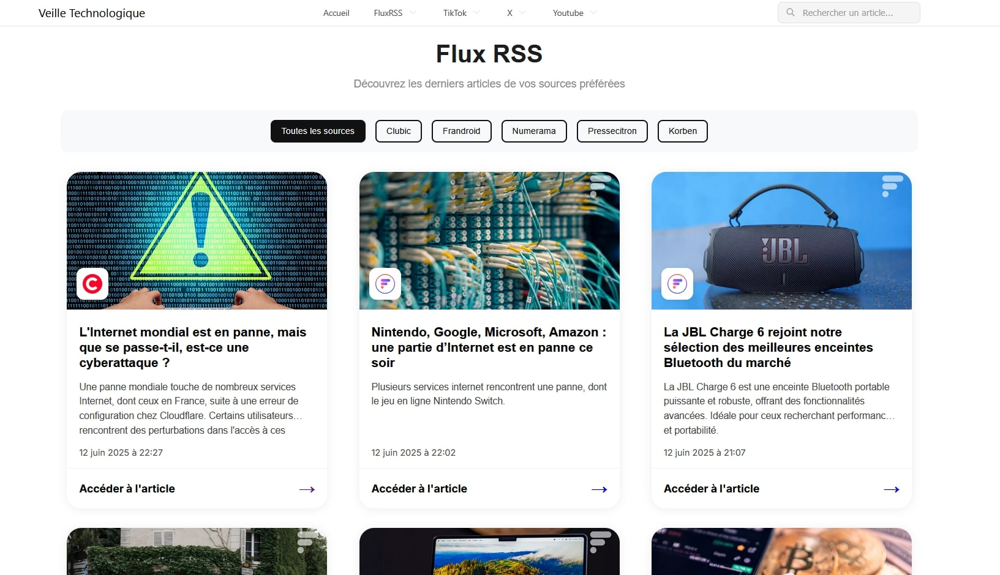

03. Veille Technologique
Outils et Méthodologie
J'utilise une plateforme dédiée pour suivre l'actualité IT : Veille Techno.

Fonctionnalités
- Surveillance automatisée des blogs techniques
- Alertes sur les failles de sécurité (CVE)
- Historique des tendances technologiques